Analisi dinamica del passaggio di carichi mobili su travi da ponte
Dal carico statico al carico che attraversa la struttura
Nel calcolo statico il carico viene collocato in una posizione e la struttura raggiunge una configurazione di equilibrio. Nel transito ferroviario o stradale veloce, invece, la posizione degli assi cambia nel tempo: il problema diventa dinamico perché la struttura non risponde istantaneamente alla nuova posizione del carico.
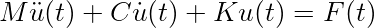
Per un asse mobile:
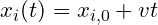
. Il ponte viene quindi eccitato da una sequenza di forze con posizione variabile.Rappresentazione modale.
Per una trave semplicemente appoggiata:
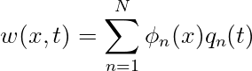
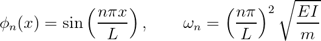
La forza generalizzata prodotta dagli assi è:
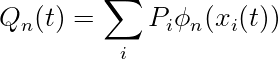
Velocità caratteristiche.
Se
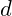
è un interasse rappresentativo: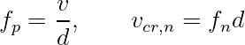
La vicinanza tra
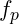
e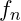
individua le velocità da studiare con maggiore attenzione.Esempio numerico
Con
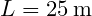
,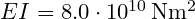
,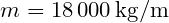
: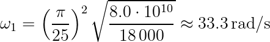
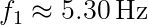
Con  :
:
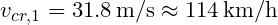
.Riferimenti tecnici utilizzati:
- D.M. 17 gennaio 2018, NTC 2018, Capitolo 5.
- UNI EN 1991-2, Eurocodice 1: Azioni da traffico sui ponti.
Nota StruHub.
StruHub usa questo schema per organizzare modello, transito e inviluppi dinamici senza trasformare l'articolo in una presentazione dello strumento.
Scelta del passo temporale e posizione degli assi
Un aspetto spesso sottovalutato è la trasformazione del carico mobile in forze nodali equivalenti. Se un asse si trova all'interno di un elemento di lunghezza
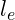
, la sua posizione locale può essere espressa tramite la coordinata normalizzata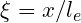
. Per un elemento trave a due nodi, la forza verticale può essere distribuita ai nodi con funzioni di forma coerenti, evitando salti numerici nella storia temporale.La regola pratica è scegliere
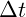
in modo che lo spostamento dell'asse in un passo sia piccolo rispetto all'elemento: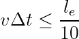
Questa condizione non è normativa, ma è un buon controllo numerico. Se non è rispettata, la risposta può apparire artificialmente attenuata o mostrare picchi non fisici.
Dal risultato locale all'inviluppo
Per il progetto non interessa solo il massimo spostamento in mezzeria. Bisogna estrarre inviluppi lungo la luce:
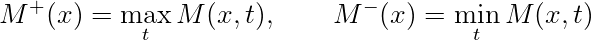
La stessa operazione va fatta per taglio, accelerazione e reazioni. L'inviluppo consente di capire dove il transito produce effetti non coincidenti con il massimo statico.
Per trasformare il transito di carichi mobili in un riferimento tecnico è utile separare tre livelli: il modello fisico, il modello numerico e la lettura dei risultati. Il modello fisico identifica masse, rigidezze, smorzamento e azioni. Il modello numerico stabilisce come queste grandezze entrano nell'equazione del moto. La lettura dei risultati decide quali effetti sono davvero utili al progetto.
Nel caso di trave da ponte, la matrice di massa non è un dettaglio secondario. Una massa assegnata al nodo sbagliato modifica frequenze proprie e partecipazione modale; una rigidezza non coerente con la sezione resistente sposta il periodo e altera la domanda dinamica. Prima di discutere il risultato, il modello deve produrre modi plausibili.
Passaggio modale e significato dei modi
Il problema agli autovalori consente di estrarre frequenze e deformate. La forma modale non è solo un disegno: indica quali parti della struttura partecipano a un certo tipo di moto. Se la deformata è locale, il modo può essere poco rilevante per la risposta globale ma importante per una sollecitazione locale.
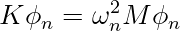
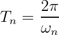
La massa partecipante permette di passare da una lista di frequenze a una gerarchia ingegneristica. Un modo con alta partecipazione nella direzione dell'azione è un modo che può governare spostamenti e tagli globali. Modi con partecipazione inferiore possono comunque influenzare accelerazioni o curvature.
Procedura di calcolo consigliata
Una procedura robusta per il transito di carichi mobili parte da un controllo statico o quasi-statico, prosegue con l'analisi modale, quindi entra nel dominio del tempo solo dopo aver verificato che frequenze e deformate siano coerenti. In questo ordine, l'analisi dinamica diventa un approfondimento controllato, non una scatola nera.
- definizione di geometria, masse e rigidezze;
- estrazione di periodi e forme modali;
- scelta dello smorzamento e del passo temporale;
- applicazione della storia di carico o del segnale;
- estrazione di spostamento, momento e accelerazione;
- confronto con un controllo semplificato.
Esempio di controllo numerico. Supponiamo che il primo controllo restituisca un periodo teorico di (0.55\,\mathrm{s}) e il modello FEM un periodo di (0.92\,\mathrm{s}). La differenza relativa è:
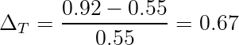
Uno scarto del 67% non va ignorato. Può derivare da vincoli troppo flessibili, massa eccessiva, inerzia ridotta o unità non coerenti. Questo tipo di controllo è ciò che distingue un calcolo numerico da un uso passivo del software.
Lettura progettuale. La verifica deve distinguere il valore massimo globale dalla distribuzione degli effetti lungo la luce. Un picco in mezzeria non implica automaticamente il massimo momento in ogni sezione, soprattutto quando la sequenza di assi produce più fronti di carico contemporanei. Un riferimento tecnico deve quindi mostrare non solo la formula, ma il motivo per cui quella formula è stata usata e il modo in cui il risultato viene interpretato. La parte finale del calcolo dovrebbe sempre riportare domanda, capacità , margine e ipotesi principali.
Impostazione del modello. Per usare questo tema come riferimento tecnico, conviene separare la modellazione in fasi verificabili. La prima fase è la definizione dello schema resistente: geometria, vincoli, masse, rigidezze e grandezze da estrarre. La seconda fase è la scelta del tipo di analisi: controllo statico, analisi modale, analisi nel tempo o confronto tra più livelli di modello. La terza fase è la lettura critica dei risultati, che non deve limitarsi al valore massimo ma deve includere posizione, segno, combinazione o istante di occorrenza.
Un controllo utile consiste nel confrontare sempre un risultato numerico con una stima semplificata. Per esempio, un periodo ottenuto con FEM dovrebbe essere compatibile con una valutazione manuale basata su massa e rigidezza. Se l'ordine di grandezza non torna, il problema non è nel solutore ma nella rappresentazione fisica del sistema.
La catena minima di controllo può essere scritta così: definizione del modello, verifica delle unità , estrazione delle frequenze, scelta dello smorzamento, applicazione dell'azione, inviluppo degli effetti, interpretazione del margine. Ogni passaggio deve lasciare una traccia riproducibile.
Unità , segni e grandezze da archiviare. Le analisi dinamiche sono molto sensibili alla coerenza delle unità . Massa in chilogrammi, forze in Newton, rigidezze in Newton per metro e accelerazioni in metri al secondo quadrato devono essere trattate nello stesso sistema. Un errore tra massa e peso può spostare il periodo di un fattore significativo.
Per ogni analisi è utile archiviare almeno: periodo fondamentale, masse partecipanti, smorzamento, passo temporale, massimo spostamento, massimo taglio, massimo momento e istante di occorrenza. Se il modello lavora per inviluppi, va salvata anche la sezione in cui ciascun effetto governa.
La grandezza di progetto non è sempre il massimo assoluto. Nelle verifiche accoppiate può essere necessario leggere valori concomitanti. Se il massimo momento si verifica a un certo istante, lo sforzo normale da usare nel dominio di verifica deve essere quello dello stesso istante, non il massimo normale indipendente.
Esempio di controllo incrociato. Supponiamo che un modello dinamico restituisca un taglio massimo alla base pari a (2.80\,\mathrm{MN}), mentre il controllo statico equivalente fornisce (2.35\,\mathrm{MN}). Il rapporto è:
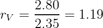
Il dato indica una amplificazione del 19%. Questo non significa automaticamente che il modello dinamico sia più corretto, ma segnala che l'effetto dinamico non è trascurabile. A questo punto il tecnico deve controllare se la velocità , il contenuto in frequenza o il segnale sismico sono coerenti con la condizione più gravosa.
Se invece il rapporto fosse inferiore a 1, non si dovrebbe concludere in modo automatico che la dinamica è meno gravosa: potrebbe essere cambiata la grandezza controllata, oppure la massima risposta dinamica potrebbe verificarsi in un'altra sezione.
Come trasformare il risultato in testo tecnico. Un post di riferimento deve chiudere il cerchio: non basta presentare formule e grafici. Bisogna spiegare quale grandezza governa, quale ipotesi è più sensibile e quale controllo manuale consente di validare il risultato. Questa impostazione rende il contenuto utile anche a chi non usa lo stesso software, perché il metodo rimane trasferibile.
Controllo dimensionale. Un riferimento tecnico deve permettere al lettore di controllare gli ordini di grandezza. Ogni risultato numerico dovrebbe essere accompagnato da un controllo dimensionale, da una interpretazione fisica e da una indicazione del parametro dominante. Se una formula restituisce un valore in
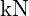
,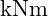
,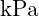
o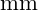
, l'unita deve essere esplicita e coerente con le grandezze inserite.La forma generale di una verifica puo essere letta come:
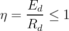
dove
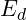
e l'effetto dell'azione di progetto e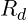
la resistenza di progetto. Questa scrittura, comune a molti problemi strutturali e geotecnici, aiuta a separare domanda, capacita e margine.Dal calcolo alla decisione. Il valore finale non basta. Bisogna chiedersi da quale ipotesi dipende, quanto e sensibile ai parametri e quale meccanismo fisico rappresenta. Un margine ottenuto con parametri poco tracciabili ha meno valore di un margine piu modesto ma ben documentato. Per questo, quando si cita una norma o un criterio di combinazione, il riferimento deve essere scritto in modo esplicito e verificabile.
Riferimenti normativi e bibliografici utilizzati:
- D.M. 17 gennaio 2018, "Aggiornamento delle Norme tecniche per le costruzioni", Ministero delle Infrastrutture e dei Trasporti, Supplemento ordinario alla Gazzetta Ufficiale n. 42 del 20 febbraio 2018.
- Circolare C.S.LL.PP. 21 gennaio 2019, n. 7, "Istruzioni per l'applicazione dell'Aggiornamento delle Norme tecniche per le costruzioni di cui al decreto ministeriale 17 gennaio 2018".
- UNI EN 1990:2006, Eurocodice - Criteri generali di progettazione strutturale.
- UNI EN 1991-2:2005, Eurocodice 1 - Azioni sulle strutture - Parte 2: Carichi da traffico sui ponti.
- UNI EN 1992-1-1:2015, Eurocodice 2 - Progettazione delle strutture di calcestruzzo.
- UNI EN 1993-1-1:2014, Eurocodice 3 - Progettazione delle strutture di acciaio.
- UNI EN 1994-2:2006, Eurocodice 4 - Progettazione delle strutture composte acciaio-calcestruzzo - Ponti.
- UNI EN 1997-1:2013, Eurocodice 7 - Progettazione geotecnica - Parte 1: Regole generali.
- UNI EN 1998-2:2011, Eurocodice 8 - Progettazione delle strutture per la resistenza sismica - Ponti.